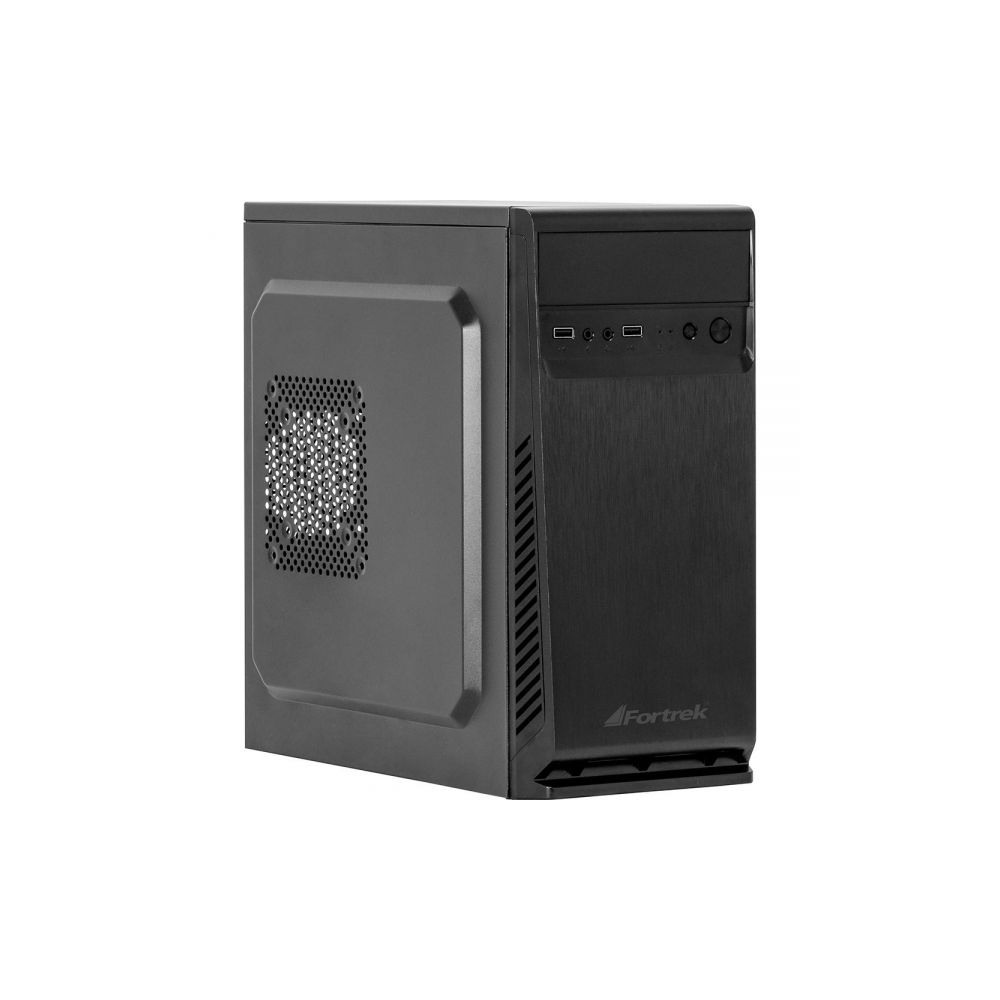

O que é um gabinete?
O gabinete é a estrutura física que abriga todos os componentes internos do computador, como a placa-mãe, processador, memória, placa de vídeo, armazenamento e fonte de alimentação. Além de proteger os componentes, ele auxilia na ventilação e organização do sistema.
Como funciona o gabinete?
O gabinete fornece suporte físico, posicionamento adequado para os componentes e fluxo de ar eficiente. Ele conta com entradas e saídas para ventoinhas, espaço para cabos e aberturas específicas para portas e conectores. Um bom gabinete ajuda a manter as temperaturas sob controle e facilita upgrades e manutenções.
Componentes principais do gabinete
- Baias: Espaços para instalar HDs, SSDs e drives ópticos
- Slots de expansão: Aberturas para placas de vídeo, som, rede etc.
- Ventoinhas: Responsáveis pela circulação do ar no interior
- Filtros de poeira: Evitam acúmulo de sujeira nos componentes
- Painel frontal: Possui botões, portas USB, entrada de áudio e LEDs
Tipos de gabinetes
Full Tower
Gabinete grande, ideal para quem usa várias placas e sistemas de refrigeração avançados.
Mid Tower
O mais comum, com bom equilíbrio entre espaço interno e tamanho externo. Suporta placas ATX.
Mini Tower
Compacto, ideal para sistemas menores com placas Micro-ATX ou Mini-ITX.
HTPC / Slim
Projetado para sistemas de entretenimento ou PCs discretos. Foco em design e silêncio.
Fatores importantes ao escolher um gabinete
Considere o tamanho da placa-mãe compatível (ATX, Micro-ATX, Mini-ITX), o fluxo de ar, suporte para water cooler, espaço para placas de vídeo grandes, número de baias, qualidade dos materiais e estética. Um bom gabinete influencia diretamente na temperatura e longevidade do seu sistema.